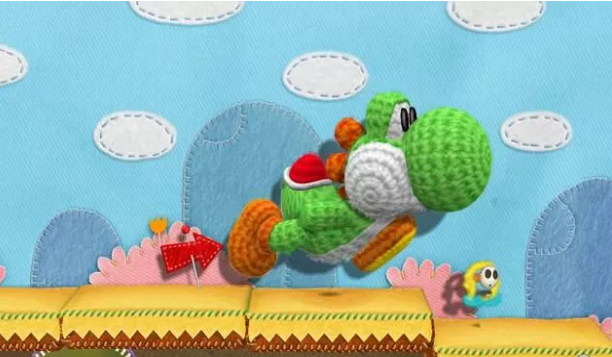
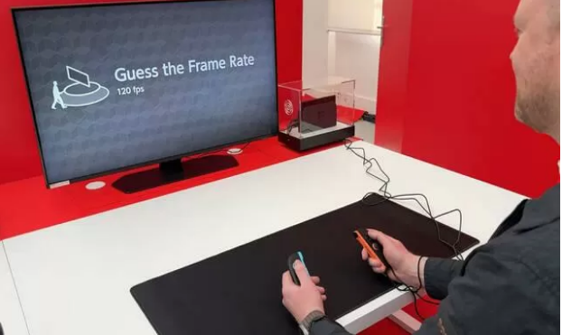
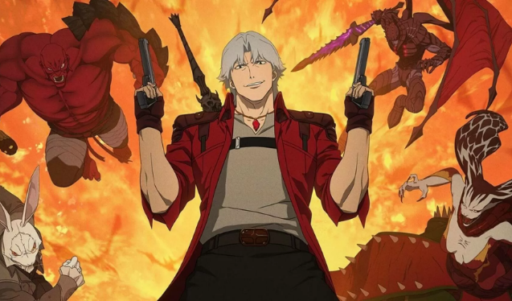
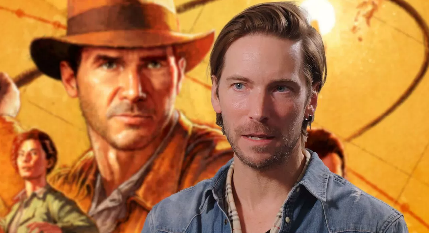

Imagen1
Noticias recientes del mundo Gaming
Contenido Principal
Aquí encontrarás todas las noticias y las últimas novedades en videojuegos. Recopilamos cada día y minuto a minuto
toda la actualidad del mundo de los videojuegos y sus diferentes plataformas para que siempre estés al corriente
de la última actualización o contenido relacionado con tus títulos preferidos
Prime Gaming Regala mas de 20 Juegos Para PC en Abril del 2025
Nintendo ha filtrado accidentalmente Yoshi's Woolly World para Switch?
El direct de Switch 2 tiene una pista.

Eres capaz de distinguir entre 60 y 120 fps? Un minijuego de Nintendo Switch 2
Welcome Tour te reta a ello

Ya salio el nuevo anime de 'Devil May Cry' en Netflix y es una
genialidad con escenas de acción sangrientas

Los actores de Indiana Jones y el Gran Circulo hablan sobre la
admiracion a las peliculas y la creacion del juego
